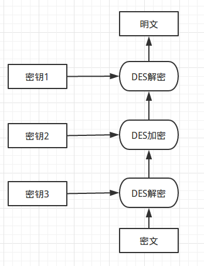

什么样的加密算法才是安全的？
- 破译算法的代价大于加密数据的价值
- 破译算法所需要的时间比加密数据保密的时间更长
- 用单密钥加密的数据量比破译算法需要的数据量少得多
数据传输需要考虑？
- 安全性——加密算法
- 完整性——数据不被篡改——hash
- 真实性——数据确实来自于发送方——数字签名
- 不可否认性——发送方不可否认他发送过数据——数字证书
对称加密
加密解密使用相同密钥
典型算法：AES、DES、3DES、Blowfish
以上算法都属于分组加密算法
分组加密
是一种对称密钥算法
将（较长的）明文拆分成固定长度的块，然后对拆分的块按照特定的模式进行加密。
设计原则：扩散（diffusion）和扰乱（confusion）是影响密码安全的主要因素。
扩散的目的是让明文中的单个数字影响密文中的多个数字，从而使明文的统计特征在密文中消失，相当于明文的统计结构被扩散。
扰乱是指让密钥与密文的统计信息之间的关系变得复杂，从而增加通过统计方法进行攻击的难度。扰乱可以通过各种代换算法实现。
设计安全的分组加密算法，需要考虑对现有密码分析方法的抵抗，如差分分析、线性分析等，还需要考虑密码安全强度的稳定性。此外，用软件实现的分组加密要保证每个组的长度适合软件编程（如8、16、32……），尽量避免位置换操作，以及使用加法、乘法、移位等处理器提供的标准指令；从硬件实现的角度，加密和解密要在同一个器件上都可以实现，即加密解密硬件实现的相似性。
DES(Data Encryption Standard)
是一种对称密钥加密块密码算法，1976年被美国联邦政府的国家标准局确定为联邦资料处理标准（FIPS）。DES现在已经不是一种安全的加密方法，主要因为它使用的56位密钥过短。
分组：64 bits 密钥：64 bits

Fiestel函数（每轮运算）步骤：
- 扩张：将32位的半块扩展到48位
- 密钥混合：扩张结果和生成的48位密钥异或(每轮密钥由主密钥通过一定规则位移生成）
- S盒：48->8个6位盒，S盒通过查找表进行非线性变换，输出8个4位
- P置换：利用固定位置表置换，生成32位
P盒置换的结果与最初的64位分组另一半L0异或，然后左、右半部分交换，接着开始另一轮。
3DES
3DES通过增加DES的密钥长度来避免暴力破解，而不是设计一种全新的块密码算法

AES(Advanced Encryption Standard)
现行的对称加密标准。AES在软件及硬件上都能快速地加解密，相对来说较易于实现，且只需要很少的内存。
分组：128 bits 密钥：128、192、256 bits
算法原理参考wiki
非对称加密
加密需要一对密钥，公钥和私钥。一个用来加密的时候另一个用来解密。
非对称加密算法通常基于数学求解问题，其安全性基于求解难度。
虽然两个密钥在数学上相关，但如果知道了其中一个，并不能凭此计算出另外一个；因此其中一个可以公开，称为公钥，任意向外发布；不公开的密钥为私钥，必须由用户自行严格秘密保管。
典型算法：RSA、DSA、ECC
无法通过公钥算出私钥，或者说以现在的计算能力需要几亿万年才能算出来
RSA
公钥和私钥的产生
假设Alice想要通过一个不可靠的媒体接收Bob的一条私人消息。她可以用以下的方式来产生一个公钥和一个私钥：
- 随意选择两个大的质数p和q，p不等于q，计算N=pq。
- 根据欧拉函数，求得r = φ(N) = (p-1)(q-1)
- 选择一个小于r的整数e，使e与r互质。
- 求得e关于r的模反元素，命名为d。(即ed ≡ 1 (mod r)（模反元素存在，当且仅当e与r互质）
- 将p和q的记录销毁。
$$公钥：(N,e) $$ $$私钥：(N,d)$$
Alice将她的公钥(N,e)传给Bob，而将她的私钥(N,d)藏起来。
安全性
有无可能通过N和e，推导出d？
（1）ed≡1 (mod φ(N))。只有知道e和φ(N)，才能算出d。
（2）φ(N)=(p-1)(q-1)。只有知道p和q，才能算出φ(N)。
（3）N=pq。只有将N因数分解，才能算出p和q。
对极大整数做因数分解的难度决定了RSA算法的可靠性。假如有人找到一种快速因数分解的算法的话，那么用RSA加密的信息的可靠性就肯定会极度下降。但找到这样的算法的可能性是非常小的。目前只有短的RSA钥匙才可能被强力方式解破。
目前被破解的最长RSA密钥是768个二进制位。也就是说，长度超过768位的密钥，还无法破解（至少没人公开宣布）。因此可以认为，1024位的RSA密钥基本安全，2048位的密钥极其安全。
加密消息
假设Bob想给Alice送一个消息m。他使用起先与Alice约好的格式将m转换为一个小于N，且与N互质的整数n，比如他可以将每一个字转换为这个字的Unicode码，然后将这些数字连在一起组成一个数字。假如他的信息非常长的话，他可以将这个信息分为几段，然后将每一段转换为n。用下面这个公式他可以将n加密为c：
$$ c ≡ n^e(mod N) $$
解密消息
Alice得到Bob的消息c后就可以利用她的密钥d来解码。她可以用以下这个公式来将c转换为n：
$$ m ≡ c^d(mod N) $$
公钥和私钥可以替换吗?
数学计算上是可以互换的。但实践中选取的公钥较小（openSSL默认65537，便于计算），私钥要长
DSA（Digital Signature Algorithm）
DSA 的安全性是基于整数有限域离散对数难题
它不能用作加密和解密，也不能进行密钥交换，只用于签名，它比RSA要快很多。
ECC（Elliptic curve cryptography）
wiki
安全性基于椭圆曲线离散对数问题的困难性
主要优势是在某些情况下它比其他的方法使用更小的密钥——比如RSA加密算法——提供相当的或更高等级的安全。
安全性高，处理速度快。
散列函数
散列函数把消息或数据压缩成摘要，使得数据量变小，将数据的格式固定下来。该函数将数据打乱混合，重新创建一个叫做散列值的指纹。
应用：加密，数据完整性，散列表，错误校正
碰撞（Collision）: 不同消息得到相同的散列值。
理论上消息是无限的，但可能的散列值是有限的。不同的消息有可能产生相同的散列值。安全散列函数应该使任意两个消息略微有差别，它们的散列值也会有很大区别。即抗冲突性。
安全散列函数
在密码学中，hash算法的作用主要是用于消息摘要和签名，换句话说，它主要用于对整个消息的完整性进行校验。安全散列函数都是不可逆的。
安全散列函数接受一个不定长输入m，将其分为固定长度的若干分组，设为t组。长度不足需要填充。
重复使用一个压缩函数f。f有两个输入，一个是上一阶段f的输出，另一个是消息的一个r分组，通常r>n;f产生一个n位的输出。算法开始时，使用一个初始化变量IV，最终输出值通过一个输出变换函数g得到消息的散列值。
典型算法：MD5、SHA1、HMAC
MD5
1996年后被证实存在弱点，可以被加以破解，无法防止碰撞（collision），因此不适用于安全性认证。目前，MD5计算广泛应用于错误检查。
分组长度： 512bits
输出：128bits
SHA（Secure Hash Algorithm）
sha-1 sha-2(-224 -256 -384 -512)
分组长度： 512bits
输出：sha-1：160bits
sha-1和MD5相比，输出更长，抗攻击能力更强，但计算也慢。且sha-1已经有有效的攻击方法，推荐使用sha-2替代。
MAC(Message authentication code)
消息认证码
在发送数据之前，发送方首先使用通信双方协商好的散列函数计算其摘要值。在双方共享的会话密钥作用下，由摘要值获得消息验证码。之后，它和数据一起被发送。接收方收到报文后，首先利用会话密钥还原摘要值，同时利用散列函数在本地计算所收到数据的摘要值，并将这两个数据进行比对。若两者相等，则报文通过认证。
计算方式：
- 使用对称加密算法对摘要加密
- 使用专门的MAC算法，HMAC，基于MD5或者SHA-1，在计算散列值时将密钥和数据同时作为输入，并采用了二次散列迭代的方式
应用
网站登陆输入密码如果用明文保存，则很容易被黑客窃取。使用hash算法生成一个密码签名，后台保存的也是这个签名值。由于hash算法不可逆，所以即便得到签名，也不能得到真实密码，就连网站的开发人员也不能得到用户密码明文。每次用户登陆时，后台计算hash值，与库中的原hash值对比就可以验证。
单纯使用MD5并不能保证账户安全。攻击者使用暴力攻击和字典攻击就用可能计算出密码。例如密文“123456”的MD5值是“e10adc3949ba59abbe56e057f20f883e”，当攻击者知道算法是md5，且数据库里存储的密码值为“e10adc3949ba59abbe56e057f20f883e”时，理论上可以猜到，用户的明文密码就是“123456”。
加盐(Adding Salt)是在密码中加入一段随机字符串再进行哈希加密，这个被加的字符串称之为盐值。
通过随机化哈希，避免最初级的暴力攻击。攻击者不知道盐值，破解难度就会加大。
实际使用中需要避免［短盐值］和［盐值复用］，使用随机盐值增加安全性。
盐值需要存储，用来验证。
应用
多人通信需要用多对密钥。
非对称密钥是单向使用的，即A给B发消息需要使用B的公钥加密，B给A发消息需使用A的公钥加密。
对称加密速度要快于非对称加密。
非对称加密通常用于加密短文本，对称加密通常用于加密长文本。
两者可以结合起来使用，比如HTTPS协议，可以在握手阶段，通过RSA来交换生成对称秘钥。在之后的通讯阶段，可以使用对称加密算法对数据进行加密，秘钥则是握手阶段生成的。
对称秘钥交换不一定通过RSA，还可以通过类似DH(Diffie–Hellman key exchange)来完成
数字签名
签署者使用他的私钥（应用一个签名算法）来签署文档。验证者使用签署者的公钥（公开的）验证文档。当一个文档被签署时，任何人都能验证它，因为任何人都能访问签署者的公钥。由于私钥的保密性，签名是无法伪造的。
公钥负责加密，私钥负责解密
私钥负责签名，公钥负责验证
数字证书
A与B使用数字签名通信，数字签名中的公钥可能被C截获，替换为自己的公钥，此时B不能确定发信方是否就是A，另一方面，A也可以不承认自己给B发送过消息，互联网中谁都不能信任对方，这时就需要第三方介入。
CA（Certificate Authority）认证机构
发信方将自己的公钥注册到CA，由CA提供数字签名生成公钥证书（Public-Key Certificate）PKC，简称证书。证书中有CA的签名，接收方可以通过验签来验证公钥的合法性。
如果某用户信任了该CA，就获取了该CA的公钥（实际上信任CA的其中一个作用就是获取CA公钥），使用该公钥解密数字证书就可以验证申请者的信息以及申请者公钥的可靠性（申请者的公钥只被CA的私钥加密，解密该私钥后只是需要验证可靠性）。
CRL（证书吊销列表）
每次接收到需要解密的数字证书时，还要去该颁发机构指定网站的证书吊销列表（CRL）中查询该证书是否被吊销，对于吊销后的证书应该不予以信任，这是信任CA的第二个作用。导致证书被吊销的可能性如申请者的私钥被黑客获取，申请者申请吊销等。
HTTPS
SSL/TLS(Transport Layer Security)
SSL包含记录层（Record Layer）和传输层，记录层协议确定传输层数据的封装格式。传输层安全协议使用X.509认证，之后利用非对称加密演算来对通信方做身份认证，之后交换对称密钥作为会谈密钥（Session key）。这个会谈密钥是用来将通信两方交换的数据做加密，保证两个应用间通信的保密性和可靠性，使客户与服务器应用之间的通信不被攻击者窃听。
SSL位于应用层和TCP/IP层之间。TLS位于传输层
客户端和主机进行 HTTP 通信之前，先建立 SSL/TLS 连接，加密通信的数据。
- client给出协议版本号、一个客户端生成的随机数（Client random），以及客户端支持的加密方法。
- Server确认双方使用的加密方法，并给出数字证书、以及一个服务器生成的随机数（Server random）。
- Client确认数字证书有效，然后生成一个新的随机数（Premaster secret），并使用数字证书中的公钥，加密这个随机数，发给Server。
- Server使用自己的私钥，获取Client发来的随机数（即Premaster secret）。
- Client和Server根据约定的加密方法，使用前面的三个随机数，生成”对话密钥”（session key），用来加密接下来的整个对话过程。
SSH登陆
用户将自己的公钥储存在远程主机上。登录的时候，远程主机会向用户发送一段随机字符串，用户用自己的私钥加密后，再发回来。远程主机用事先储存的公钥进行解密，如果成功，就证明用户是可信的，直接允许登录shell，不再要求密码。
参考链接
RSA算法原理（一） （二）
RSA的公钥和私钥哪个用来加密哪个用来解密
RSA中的数学
RSA证明
数字签名是什么
浅谈nodejs中的Crypto模块
MD5入门介绍及crypto模块的应用
如何正确对用户密码进行加密
图解SSL/TSL协议
SSL/TLS原理详解